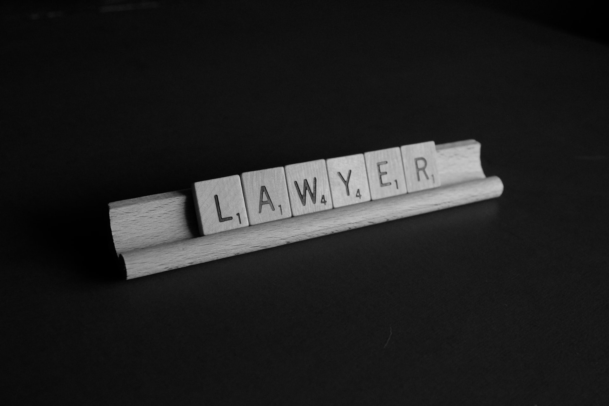

General
English evidence law contains more detailed rules of proof than do other legal systems. This is largely attributable to the historic practice of trial by jury. Less strict rules of proof prevail in administrative agencies where juries are not used, as well as in trials before judges alone. The following are some of the detailed rules that must be addressed in a legal action.
Evidence and arguments are generally presented by counsels for the defendant (the person against whom an action is brought) and the plaintiff (the instigating party in a case) in such a manner, and under the rules governing judicial procedure, that a judge or jury may be convinced of its truth. The submission of evidence may be by witnesses or by documents; arguments usually concern the inferences that may properly be drawn from facts admitted or established. In an action at law, the person asserting a fact is said to have the burden of proof—that is, the burden of sustaining the fact until the trial is ended. Unless that person can present sufficient proof to overbalance that of the other party, so that it is more likely than not, he or she is not considered to have sustained the burden of proof, and the case is dismissed. - In criminal cases, all the facts relied upon to make up the offense must be proved by the prosecution beyond reasonable doubt; it is often said that the prosecution must satisfy the jury so that they are sure of the facts. This even applies to most issues raised by the defense.
Certain matters cannot be produced as proof in court, such as hearsay evidence—a witness's evidence of what somebody else said. Certain evidence should be considered with caution, unless there is other evidence—corroboration—to support it. This includes the evidence of children and people with mental disorders.
Burden of Proof
The burden of producing evidence on a given point, and of persuading the judge or jury of its truth, is assigned by law to one side or the other in a court trial. Best known is the rigorous requirement that the prosecution in a criminal case must prove the defendant's guilt beyond reasonable doubt. Lesser burdens placed on other litigants(parties which take part in a court action) typically involve proving their case by a balance of probabilities.Thus, a person may be found not guilty of manslaughter for a death occurring in a car crash when guilt is not proved beyond reasonable doubt. That person can, however, still be held liable for damages in a civil action for the same death, and on the same evidence, because negligence can be shown by a balance of the probabilities.
Admissibility
Rules of admissibility determine which items of evidence judges or juries may be permitted to hear (or see or read). Generally, if evidence is relevant it is admissible. Nevertheless, certain facts that are logically relevant and of considerable evidential force are still not legally admissible because of their supposed tendency to “confuse and mislead the jury”.
Relevance

Evidence is relevant when it has a tendency “in reason” to prove or disprove disputed facts. Thus, direct testimony of an eyewitness is relevant because it can show that an event occurred.
Using an article found at the scene of a crime to show that its owner was present is less reliable, because it could have been placed or dropped there by another person. Its force is weak when viewed alone, but coupled with other equally weak evidence it may suffice to prove a fact. Such indirect or circumstantial evidence can be effective in a court case.
Relevant circumstantial evidence may be excluded, however, when it could be misused. For example, a defendant's prior criminal record cannot be admitted. In a civil action, the fact that the defendant is insured is excluded because it diverts attention from the problem of legal fault to the improper question of ability to pay damages.
Hearsay
Hearsay evidence consists of statements made out of court by someone who is not present to testify under oath at a trial. Even if relevant, hearsay evidence is generally excluded unless some exception can be found. This rule is a distinctive characteristic of English law and is virtually unknown in other legal systems. One reason for the exclusion of hearsay is the practice of cross-examination of witnesses in open court by opposing lawyers; written or spoken assertions made by a person not present cannot be subjected to cross-examination.
Various exceptions are made, however, to the exclusion of hearsay evidence. Not everything that a witness “heard said” is considered hearsay; sometimes the very speaking of words is important apart from their truth. For instance, the threat “your money or your life” proves an intent to rob. Moreover, not all hearsay is excluded from consideration. The fact that an accused person has confessed guilt may support a conviction despite denials or silence at a trial. A confession is an admission by a person to the action in question—a classic hearsay exception. A confession is not admissible, however, when obtained by threats or promises of favour.
The recognized exceptions usually invoke either or both of two principles: the statement was made by a speaker who had reason to be truthful; and the speaker is now unavailable to testify. The classic example is a dying declaration that may prove the cause of death of a speaker who knew that death was imminent, because the deceased had little reason to lie and cannot now testify. Other exceptions to the hearsay rule involve written evidence such as birth and death records. Since the abandonment of jury trials in non-criminal cases, the hearsay rule has been relaxed in civil cases.
Witnesses etc.
Nearly all persons with knowledge relevant to the case can testify; only those limited by extreme youth or mental incapacity are precluded. Witnesses may state only their own knowledge and are required to express facts rather than opinions. However, a special category of expert witnesses also exists. Experts do sometimes utilize hearsay and routinely express opinions. Doctors, for example, can testify as to the causes of death and injury; through training and experience, they are better qualified to form an opinion than the jurors.
Legal evidence is not limited to the sworn testimony of witnesses. Specific objects, when identified by spoken testimony, may often be introduced in evidence when their existence or appearance tends to prove or disprove an alleged fact.
Privileges
Except for the accused party, anyone can be compelled to be a witness in a trial, but not every question asked must be answered. Facts that need not be disclosed on demand are known as privileged information. Information may be privileged even when the response would serve the cause of truth and justice.
Only powerful social interests, however, can justify refusal to answer questions, so privileges are few. Among those established are the need of the nation to protect military and diplomatic secrets, often called Public Interest Immunity. A witness cannot generally be forced to answer a question that is self-incriminating.
In addition, some disclosures made in confidence need not be revealed. Lawyers cannot repeat what their clients have told them privately. However, the spouse of the accused is competent to give evidence for the prosecution, and can generally be compelled to give evidence on behalf of the accused.
Corroboration
Independent, admissible, and credible evidence tending to confirm that the accused has committed the crime, called corroboration, is required in case of perjury, some sexual offences, and in criminal cases that involve the evidence of an accomplice.
Roman Concepts
Western Europe generally follows a civil law tradition, and consequently employs quite different rules of evidence. The codes there are nearly silent on the subject of admissibility, most probably because trial by jury is unknown. Witnesses are questioned both by judges and by lawyers, thus minimizing disputes about which questions are permissible. European civil and criminal codes allow witnesses privileges similar to those found in the English legal tradition, although they are generally less protective of the accused party. The legal codes of Japan are heavily based on German laws, and still resemble them to some extent, but the post-World War II constitution also incorporated many protections of the accused found in English law.
Free Evidence
The civil-law systems have always left the task of finding the facts to a professional judge. This has a number of consequences. Above all, the rules of evidence can be flexible, since a professional judge is presumed capable of accurately assessing testimony. Indeed, the law of evidence, so important in common-law countries, has no counterpart in the civil law, which follows the principle of free evidence instead.
The principle of free evidence means that the Judge is not bound by any legal rules when he assesses the veracity of alleged facts. However, the Judge must assess the evidence logically and impartially. Above all, the judge’s assessment must be based upon his sincere conviction, i.e., it must be the product of his conscience and not the product of any undue interference or influence.
Nowadays there are common law influences in civil caw and the other way round. Thus, several civil law countries have introduced some Anglo-Saxon rules of evidence. For example, illegally obtained evidence can sometimes be inadmissible. - In Cambodia, the mandatory inadmissibility of confessions extracted by torture is such an Anglo-Saxon influence.